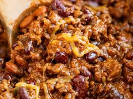

Dilly Chili

Description
Dilly Chili is a very spicy but very delicous chili that is delicious on a cool autumn day. With beef, pork, 3 types of beans, and some secret indgredients you'll be back for another bowl!
This recipie is a somewhat traditional chili with some unique twists. As asual it taste great with some shredded Wisconsin cheese and corn chips! Use single serve corn chips bags and have some walking chili!
Indgredients
- 1 lb. lean ground beef
- 1 lb. applewood smoked bacon
- 1 bottle Tobasco brand bloody mary mix
- 1 large can of stewed tomatoes
- 1 can pinto beans
- 1 can red kidney beans
- 1 can black beans
- Jalepeno peppers
- Onions
- Black olives
- Cream cheese
Steps
- Cook bacon in frying pan. Set aside ontop of paper towl to drain.
- Brown ground beef in reserve bacon grease.
- While either meat is cooking open beans and chop vegtables.
- Add cooked meats and all other indgredients to slow cooker.
- Cook on low for 7 hours.
- Serve with cheese and corn chips!
home